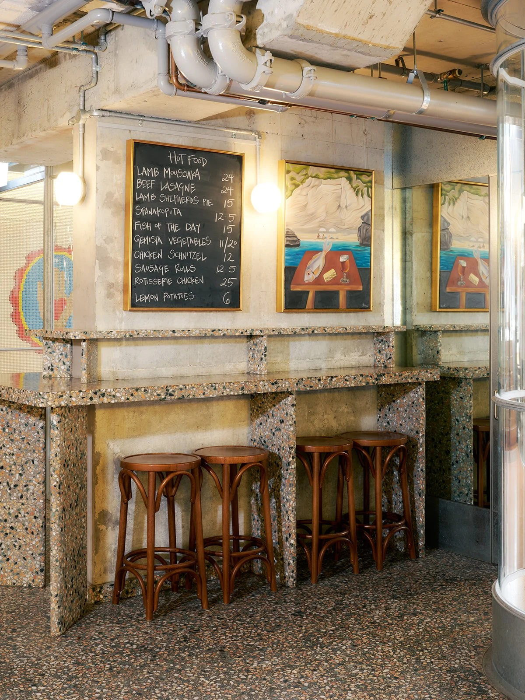
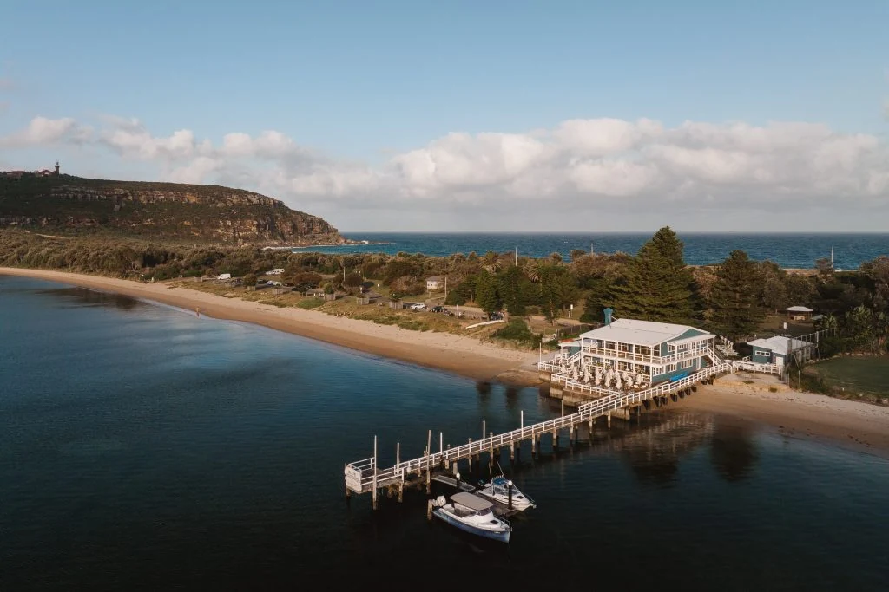
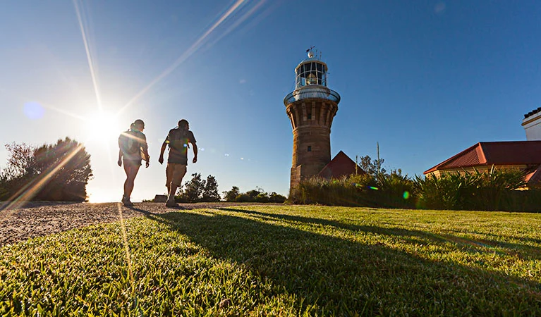

11월 15일
사진 더 보기아시아나 비즈니스석 · 운항 기종 확인 필요일요일
인천 출발
날짜 링크아시아나 인천–시드니 직항 비즈니스석을 이용하는 계획입니다. 아래 시각은 검토용 예시이며, 실제 운항편·출발 시각·기종은 발권 전에 확인합니다.
- 17:00인천공항 · 출발 약 3시간 전 도착
- 20:00시드니행 출발 예정 · OZ601비행 약 10시간 20분 · 날짜와 도착 시각은 현지 기준
숙박기내

11월 15일 출발해 21일 귀국하는 시드니 5박 계획입니다. 도심 Capella 3박과 맨리 Elysium 2박으로 호텔은 한 번 옮깁니다. 국제선과 숙소는 예약 전 확인이 필요한 후보입니다.
오페라하우스와 하버브리지, 본다이 해안 산책, 패딩턴 쇼핑에 두 번의 골프를 더했습니다. 오전·오후 활동을 모두 채우기보다 휴식 시간을 두고, 긴 산책과 세일링은 취향에 따라 선택합니다. NSW 골프클럽은 비회원 승인이 필요합니다.
국내선 이동 없이 시드니와 노던비치를 즐기고 싶은 분께 맞습니다. 해밀턴 아일랜드를 포함하고 싶다면 2안을 비교해 보세요.
 사진 더 보기
사진 더 보기아시아나 인천–시드니 직항 비즈니스석을 이용하는 계획입니다. 아래 시각은 검토용 예시이며, 실제 운항편·출발 시각·기종은 발권 전에 확인합니다.

 Coogee Pavilion 점심 예정
Coogee Pavilion 점심 예정 38° 배스하우스 · 오전 산책 대체 선택오페라하우스 한국어 투어 · 약 30분
38° 배스하우스 · 오전 산책 대체 선택오페라하우스 한국어 투어 · 약 30분아침 도착 후 입국·수하물 수령과 시내 이동에 여유를 두고 Capella에 짐을 맡깁니다. 첫날은 본다이–브론테 약 2–2.5km만 걷고, 쿠지까지는 차량으로 이동해 점심을 먹습니다. 계단과 경사가 있는 해안길이므로 피곤하거나 도착이 늦으면 산책을 줄입니다.
오페라하우스 한국어 투어는 약 30분입니다. 15:45 회차를 예약하는 안으로, 15분 먼저 도착합니다. 투어 전 객실 준비가 안 됐다면 짐만 보관하고 투어 뒤 체크인합니다. 저녁은 Bennelong 예약을 추진합니다.
38° 배스하우스를 원하면 오전 해안 산책과 쿠지 점심을 대신해 본다이에서 90분 세션과 점심을 잡습니다. 두 활동을 모두 넣지는 않습니다.


 패딩턴 부티크
패딩턴 부티크 Spezia · 클라임 전 이른 저녁
Spezia · 클라임 전 이른 저녁 Summit Insider Twilight · 회차 예약 필요
Summit Insider Twilight · 회차 예약 필요아침에는 로열 보타닉 가든과 미세스 매쿼리 체어를 둘러보고, 서큘러키와 록스에서 브런치를 먹습니다. 오후에는 패딩턴에서 쇼핑한 뒤 호텔에서 쉽니다. 바랑가루까지 모두 이어 걷는 일정은 생략해 저녁 체험을 위한 여유를 남깁니다.
Spezia는 Capella 맞은편 The Lands에 있는 식당입니다. 17시 이른 저녁을 먼저 먹고 BridgeClimb으로 이동합니다. 사다리가 없는 Summit Insider Twilight는 약 2시간 40분이며 계단이 많습니다. 실제 출발 회차에 맞춰 식사 시간을 연동하고, 맞지 않으면 Spezia를 점심으로 옮깁니다.

 새 시드니 피시마켓 · 생굴과 만 산책
새 시드니 피시마켓 · 생굴과 만 산책 Margaret 디너 · 더블베이호텔 휴식
Margaret 디너 · 더블베이호텔 휴식NSW Golf Club 18홀을 희망하는 날입니다. 비회원 방문은 클럽 승인과 티타임 확보가 선행되어야 합니다. 오전 티타임을 기준으로 계획했으며, 승인되지 않으면 The Coast 등 대체 코스의 방문 조건과 잔여 시간을 별도로 확인합니다.
라운드와 클럽하우스 점심 뒤 새 시드니 피시마켓을 짧게 둘러봅니다. 호텔에서 쉬고 저녁에는 더블베이의 Margaret으로 갑니다. 라운드가 늦어지면 피시마켓을 생략합니다.

 맨리 도착 후 호텔에 짐 보관
맨리 도착 후 호텔에 짐 보관 맨리 하버 세일링 · 긴 산책 대체 선택
맨리 하버 세일링 · 긴 산책 대체 선택 Cibaria 저녁 예정
Cibaria 저녁 예정체크아웃 후 서큘러키에서 맨리행 페리를 탑니다. 맨리 선착장에서 호텔에 먼저 짐을 맡기고 Norma’s Deli에서 이른 점심을 먹습니다. 이후 차량으로 클론타프에 가서 맨리까지 해안길을 걷습니다.
클론타프–맨리는 약 7.2km, 약 3.5시간의 산책로입니다. 짧고 평탄한 코스가 아니므로, 편히 쉬고 싶으면 맨리–셸리비치 산책으로 바꿉니다. 오후 세일링도 긴 산책을 대체하는 선택 활동이며, 운영사·출항 시각·소요 시간을 확인한 뒤 예약합니다. 17–19시 항해를 일몰 상품으로 단정하지 않습니다.



팜비치 · The Joey는 15시 전 방문
배런조이 등대 전망 산책 Bert’s · 뉴포트
Bert’s · 뉴포트오전에는 Long Reef Golf Club 18홀을 치고 점심 뒤 팜비치로 이동합니다. The Joey는 오후 3시까지 운영하므로 먼저 들러 쉬고, 그다음 배런조이 등대 전망 산책을 합니다.
등대까지는 경사와 계단이 있는 길입니다. 왕복 걷기에 약 1시간, 사진과 휴식까지 합해 1–1.5시간을 잡습니다. 금요일에는 등대 내부 투어를 전제로 하지 않습니다. 라운드가 늦어지면 The Joey 방문이나 등대 산책 중 하나를 생략하고, 저녁에는 뉴포트의 Bert’s로 갑니다.
Elysium Manly 출발아시아나 OZ602 출발 · 비즈니스 · 기종 확인10:20 출발편을 기준으로 공항에 약 3시간 먼저 도착하도록 호텔에서 출발합니다. 맨리에서 공항까지는 교통 상황에 따라 45–75분 이상 걸릴 수 있습니다. 실제 항공편이 확정되면 픽업 시각을 다시 맞춥니다. 인천에는 같은 날 저녁 도착하는 계획입니다.
사진 더 보기사진 더 보기사진 더 보기사진 더 보기사진 더 보기사진 더 보기사진 더 보기사진 더 보기사진 더 보기사진 더 보기사진 더 보기사진 더 보기사진 더 보기사진 더 보기사진 더 보기사진 더 보기| 국제선 항공 · 비즈니스 왕복 예상 | A$10,240 | ₩10,444,800 |
| OZ601 / OZ602 후보 · 2인 기준 예산이며 발권 운임 미확정 | ||
| 숙박 5박 | A$5,100 | ₩5,202,000 |
| Capella A$1,300 × 3박 + Elysium Manly A$600 × 2박 · 객실당 예상 | ||
| 골프 2라운드 · 2인 | A$1,200 | ₩1,224,000 |
| NSW Golf Club · Long Reef 예상 배정액. 카트·클럽 대여·방문객 요금은 견적 확인 | ||
| 체험 예산 | A$1,400 | ₩1,428,000 |
| BridgeClimb · 한국어 투어 및 선택 체험용 배정액. 세일링·배스하우스는 대체 일정으로 예약 | ||
| 식사 예산 | A$2,500 | ₩2,550,000 |
| 저녁 5회 · 점심 · 음료 예상. 호텔 조식 포함 여부에 따라 조정 | ||
| 현지 이동 예산 | A$3,100 | ₩3,162,000 |
| 공항·골프·지역 간 차량 이동, 맨리 페리 포함 예상. 기사 포함 차량인지 별도 견적 확인 | ||
| ETA·여행자보험·예비비 | A$990 | ₩1,009,800 |
| ETA 신청 수수료·보험 및 변동 비용 예상 | ||
| 합계 · 두 분 | A$24,530 | ₩25,020,600 |
호텔은 한 번만 옮기고, 도심과 맨리 해변에서 5박을 보내는 안입니다. 골프와 산책이 있는 날에도 휴식 시간을 남기고, 선택 활동은 취향과 컨디션에 맞춰 결정합니다.
사진 더 보기